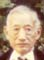

| 148,107,60,25 光 |

金珠 = 葉啟仁 Gïm Jî = Yêp Kāi Ngĩn Jīnzhū = Yè Qǐrén Mabel (1924 - 12/14/2010) = David L. Yip |
|---|---|
| 149,108,61,26 前 |
葉笑娟 = 森内初雄 Yêp Xël Gǔn = Sẽim Nuì Chö Hũng Yè Xiàojuān = Sēnnèi Chūxióng Christine Yip = Morris Moriuchi (m.1975) |
| 150,109,62,27 遠 |
Jennifer Moriuchi |